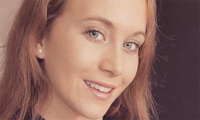
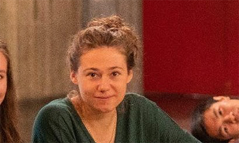
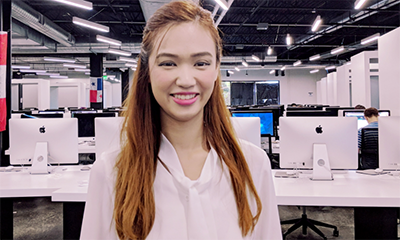
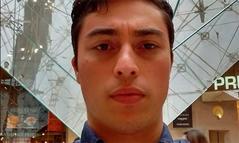

Who We Are
We are a distinctive identity, we connect different companies and people who wants to volunteer to homeless, creating a less of a barrier with homeless people. Here at 1 to 1, we are driven by a single goal, to do our part in making the world a better place for all. Our decision making is informed by comprehensive empirical studies, research, and high quality evaluations. We strive to build productive relationships and make a positive impact with all our pursuits.
Our Team
Our Team is what makes things happen!
Pauline Baron
Founder of 1 to 1
Originally from France, Pauline is spending her last year of studies abroad, in UC Berkeley’s Has Business School. “Every time I walk by homeless people in the street, the same thing happens: I feel very sorry for them but I keep my eyes off, I want to help them but at the same time I feel useless, I want to stop and talk but instead I just carry on… I was tired of just feeling sorry. When I arrived in the Bay Area last August, I was shocked by the number of people living on the street. I decided to stop being a spectator and act. As one of my teachers told me once: When we want something, most of the time we can achieve it”
Gabrielle
Co-Founder of 1 to 1
Gabrielle is also a student from UCB Haas Business School. She is enrolled in the same program as Pauline and they met each other during their first year of Business School, in EDHEC, France. “What struck me when I arrived in the Bay was the tremendous and very visible inequality among people in the street. Where I lived in France, many homeless are also wandering in the streets, but here in the Bay, I felt that poverty what so endemic that I felt nothing could help it, and that on an individual level, nothing could be possible to improve their lives. When we had the chance to create a project with 42 students, it was clear I wanted to do something for these people.”
Cynthia Luu
Co-Founder of 1 to 1
Worked on UI/UX design, took part in coding, and project management for the 1 to 1 website. Previously, she has a background in Graphic Designer, and UI/UX Design. Currently, studying at 42 Silicon Valley School and an ambassador of the school. Passionate for our 1-to-1 association, want our non-profit association to succeed in helping more homeless people.
Lauro De la Garza Breton
IT of 1 to 1
I am currently a student at 42 coding school and an Associate Banker at JPMorgan Chase. Before I entered the Tech-industry in 2019 I used to work at the Mexican Minsitry of Economics and have a bacherlors in International Business from the University of Monterrey and a masters degree in Corporate Finance from L’école Supérieure des Sciences Commerciales d’Angers (France). I have several professional experience in several industries and business areas of different companies in Mexico and in the United States. I decided to enter into the software development world since technology has been changing our environment in every way, like how we do business, how we manage our finances and even how we shop. I am an innovative and active person, full of initiative that is always seeking new goals and objectives.